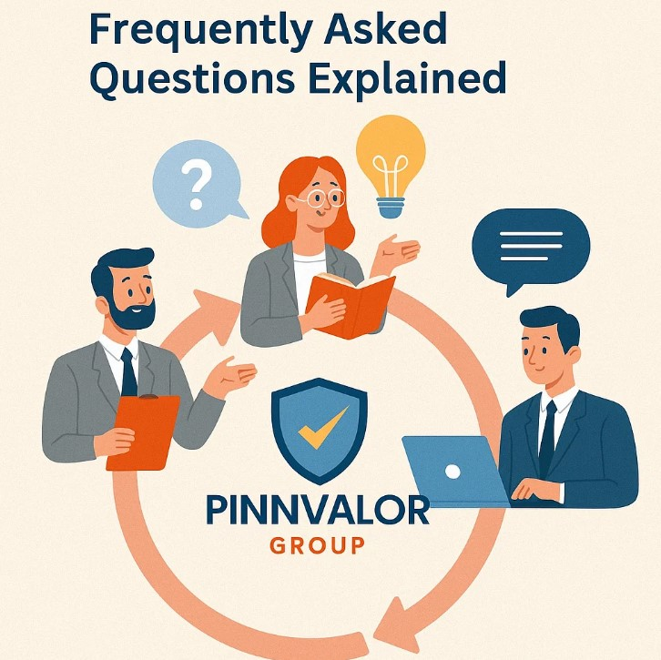

Carve-Out Valuation Meets MIS Reporting: Frequently Asked Questions Explained
In today’s dynamic corporate environment, carve-outs and Management Information System (MIS) reporting play a crucial role in strategic decision-making. Companies often face challenges when separating a business unit for sale, spin-off, or restructuring. Understanding carve-out valuation and its impact on MIS reporting is essential for finance professionals, investors, and management teams.
How can MIS reporting make or break your carve-out strategy?
Struggling to separate a business unit for sale or spin-off? Accurate MIS reporting bridges the gap between numbers and strategy.
What is Carve-Out Valuation?
A carve-out valuation refers to the process of determining the standalone value of a business unit or subsidiary that is being separated from the parent company. This process requires isolating the financials, assets, liabilities, and operational data of the unit to present an accurate valuation.
- Purpose: Supports mergers, acquisitions, spin-offs, divestitures, or partial sales.
- Key Elements: Revenue, operating costs, assets, liabilities, and cash flows of the unit.
- Challenges: Allocating shared costs, identifying unit-specific revenues, and forecasting standalone performance.
Why MIS Reporting Matters in Carve-Outs
Management Information Systems (MIS) reporting provides accurate, timely, and relevant data to support strategic decisions. When a business unit is carved out, MIS reports help stakeholders understand the unit’s performance, profitability, and risks.
- Transparency: MIS reporting ensures clarity in financial performance and operational metrics.
- Decision Support: Helps management, investors, and auditors evaluate the unit’s standalone viability.
- Compliance: Supports regulatory requirements, internal controls, and audit processes.
FAQs on Carve-Out Valuation & MIS Reporting
1. How is a carve-out valuation different from a standard business valuation?
Unlike standard valuations, carve-out valuations focus only on the specific unit being separated. This requires segregating shared resources, overheads, and intercompany transactions to provide an accurate standalone picture.
2. What are the common challenges in carve-out valuations?
- Allocating shared costs and centralized services.
- Adjusting historical financials to reflect standalone operations.
- Estimating future cash flows for the carved-out entity.
- Handling tax implications and regulatory requirements.
3. How does MIS reporting support carve-out decisions?
MIS reporting consolidates operational and financial data to provide a snapshot of the unit’s performance. It helps identify profitable segments, monitor KPIs, and prepare management for potential risks.
4. Which stakeholders benefit from carve-out MIS reporting?
- Top management: for strategic decision-making.
- Investors: for investment or acquisition analysis.
- Auditors: for compliance and financial verification.
- Regulators: for legal and statutory reporting requirements.
5. What tools or methods can improve carve-out MIS reporting?
- ERP systems to segregate financials at the unit level.
- Business intelligence dashboards for real-time insights.
- Automated reporting tools to reduce manual errors.
- Scenario analysis to forecast standalone performance.
Key Takeaways
- Carve-out valuation requires careful segregation of financials to ensure an accurate standalone assessment.
- MIS reporting plays a pivotal role in providing transparency, compliance, and decision support during carve-outs.
- Addressing common challenges proactively can improve accuracy and reduce risks.
- Advanced tools and automation can enhance reporting efficiency and reliability.
Conclusion
Carve-out valuation and MIS reporting are intertwined processes critical for strategic corporate actions. By understanding the frequently asked questions and addressing the challenges, finance professionals can ensure smooth transitions, informed decision-making, and accurate financial representation of the carved-out units.